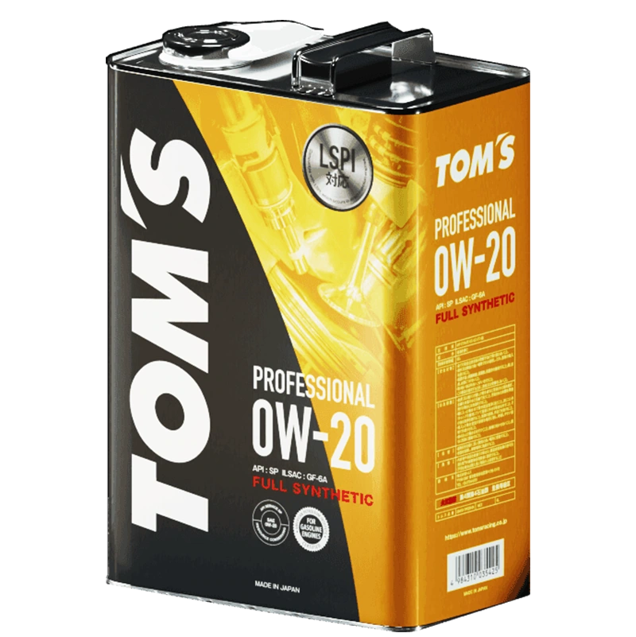
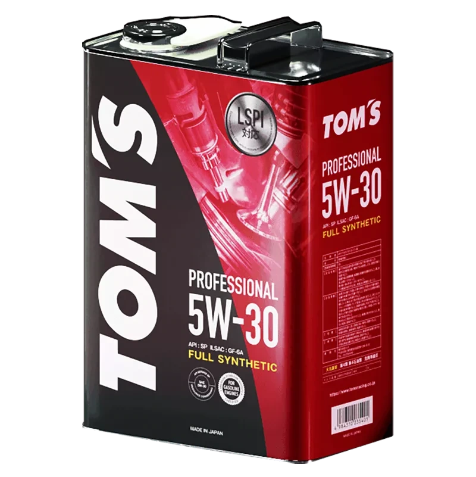
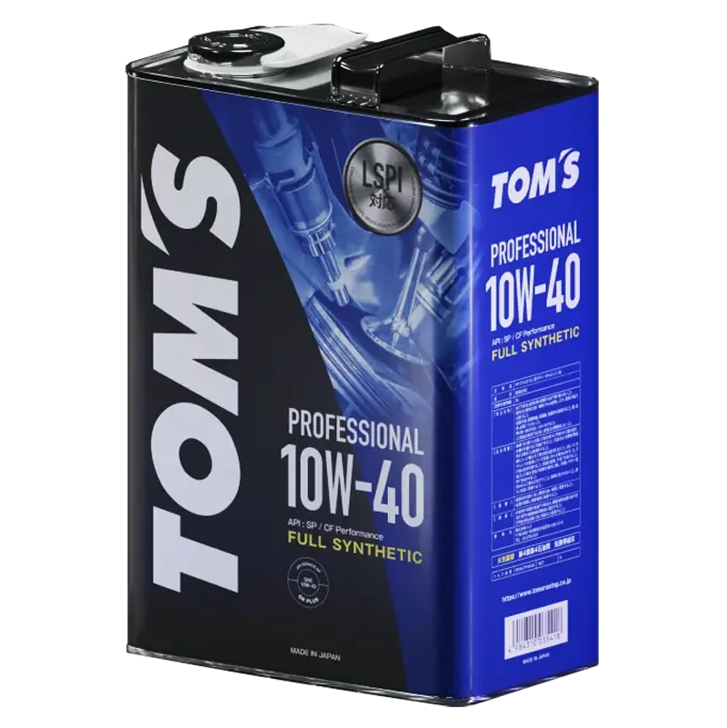
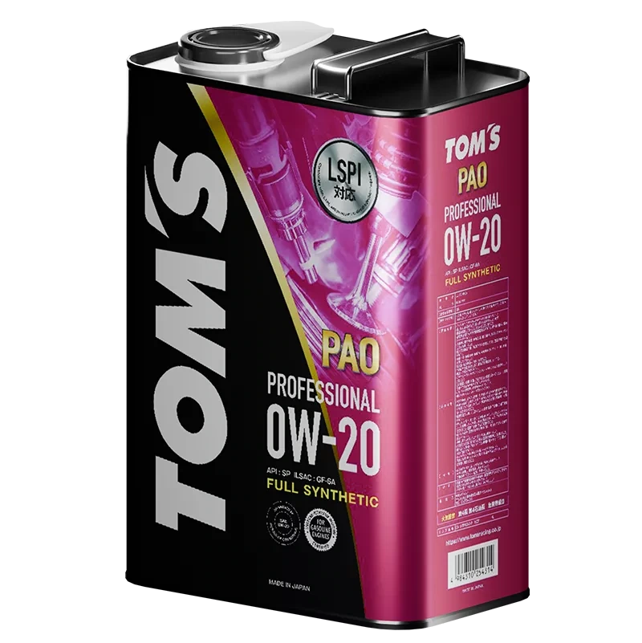
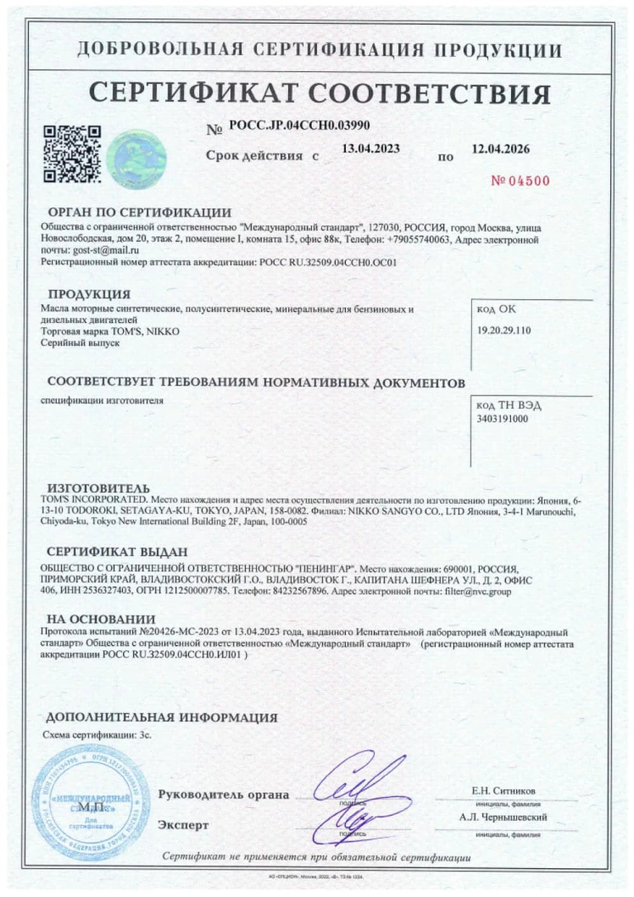

Японская инженерная культура
История бренда объединяет автоспорт, разработку компонентов и внимание к автомобилю как к единой системе.
Характер, рождённый в автоспорте.
Масла и технические жидкости TOM’S
для тех, кто ценит свой автомобиль.



Для двигателя, трансмиссии
и системы охлаждения.

PRECISION. PROTECTION. PERFORMANCE.Начните с вязкости, указанной в руководстве автомобиля. Изучите продукты и проверьте необходимые допуски перед покупкой.
Это фильтр каталога, а не проверка совместимости. Вязкость сама по себе не подтверждает пригодность масла для вашего двигателя.
Перейти к подбору на сайте TOM’S ↗Попробуйте другую вязкость или категорию.
Объёмы и изображения — по оригинальным карточкам TOM’S. Актуальные цены и наличие уточняйте на сайте продавца.
История бренда объединяет автоспорт, разработку компонентов и внимание к автомобилю как к единой системе.
Разные вязкости, серии и форматы упаковки. Выбор строится на требованиях производителя автомобиля.
Оригинальные карточки продуктов, технические материалы и документы доступны для проверки перед покупкой.
В 1974 году гонщик Нобухидэ Тачи и инженер Киёси Оива основали TOM’S. Автоспорт стал отправной точкой истории бренда.
Сегодня имя TOM’S объединяет гоночное наследие, автомобильные компоненты и линейку технических жидкостей.
История на сайте TOM’S ↗Изучите документы, опубликованные на сайте TOM’S. Показанный сертификат — архивный: срок действия до 12.04.2026. Запросите актуальный документ перед покупкой и проверьте его область действия.
01 Сертификат соответствия PDF ↗02 Документ о происхождении PDF ↗Все документы на сайте TOM’S ↗
АРХИВ: СРОК ДО 12.04.2026 / ОТКРЫТЬ PDF ↗Точки контакта, указанные в оригинальном каталоге TOM’S.
Узнайте об условиях сотрудничества напрямую у команды бренда.
Стать партнёром ↗